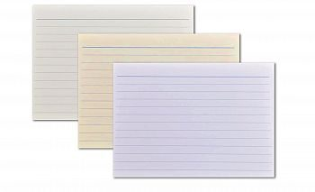
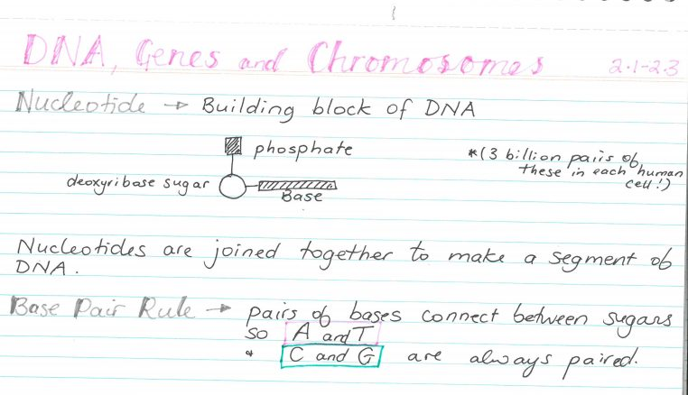
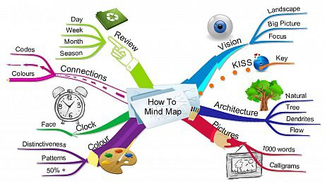

This chapter appears at the start of the Year 9 and Year 10 Science booklets. It applies to every topic in every course, so it lives here once instead of being repeated in each topic.
The Science Toolbox
A scientist uses a number of tools to answer key scientific questions. Many of them help organise and illustrate data, including:
- Diagrams: in pencil, in a simple 2D format, and labelled
- Experimentation: fair tests
- Flow charts: with a title, labelled axes and scales
- Graphs: labelled axes with units
- Maps: appropriate labelling and legends
- Photographs
- Surveys
- Tables
Passive vs active revision
Passive revision techniques ☹ let you recognise ideas and information, but they don't help you recall them in an assessment.
Active revision techniques 😊 make your brain work by doing something with the information. You are far more likely to recall the information rather than just recognise it.
Active revision techniques
1. Flashcards
Flashcards let you practise summarising information and can help you find gaps in your learning. You can use them in several ways:
- Condense your notes on a specific topic onto a card.
- Write a term on one side and its definition on the other.
- Write a question on one side and the answer on the other.


2. Sticky notes
Sticky notes are good for summarising information and remembering key details. Use colours to identify themes and stick them around your home. Move them regularly so you don't get used to seeing them in one place.
3. Practice questions
Working through past tests or DEEDS quizzes is a great way to test your knowledge, either by writing plans or full answers.
- First, try answering the questions without your notes, to find out which areas need more work.
- Then, with your notes, practise planning the framework for your answers. Use lists to compare points for and against a statement.
- Finally, come back and answer the question again without your notes.
4. Study groups
Revising as a group gives you the chance to quiz and test each other. Try explaining topics to others without your notes. It's a great way to strengthen your own memory and understanding.
5. Mind maps
Mind maps are a great way to find connections between ideas. Colours and images will help your memory. Drawing diagrams can help you remember processes or cycles.

But don't just make a mind map from your notes and look at it. Do something with it:
- Test what you can remember from it. Can you recreate it without looking?
- Can you summarise the ideas even further to help you memorise them?
- Can you add an example for each of the nodes?
6. Spread out your tests
Test yourself on the same material at the end of the day, the next day and at the end of the week. Change the order you test yourself in so you don't get used to the same pattern.
Top revision tips
- "The best time to start revising is day 2 of your topic. The second best time to start revising is now." Start your revision as early as possible. Plan your revision timetable this evening and get going! You will feel the benefits once the assessments start. Start with the topics you are least confident about, and give them more time overall.
- The most important idea in revision is active vs passive revision. Active revision means doing something with the information you need to learn (usually testing your memory). Passive revision means simply reading through your old notes. Don't fall into the trap of thinking that this is enough!
- Revising is hard work, so break your revision into chunks. A good starting point is 20 minutes of revision followed by a 10-minute break away from your study. Make sure you go back to revising after the break!
- Vary your methods of revision. Making endless flashcards can be disheartening and overwhelming. Mix difficult material with more familiar material. This keeps it interesting, and small chunks are easier to remember.
- Test, test, test yourself. Start each day by trying to remember 10 facts you learnt the day before. Test yourself on what you have learnt at the end of the day, the next day and at the end of the week. Change the order you test yourself in so you don't get used to the same pattern.
- Review your revision plan at the end of each week. Did you do enough? Did you remember more this week than last week? What time of day do you revise best? How can you improve your revision next week?
- Don't spend all your time revising. Build some flexibility into your plan so you can enjoy breaks. Self-care is important: get enough sleep, eat well and keep hydrated.